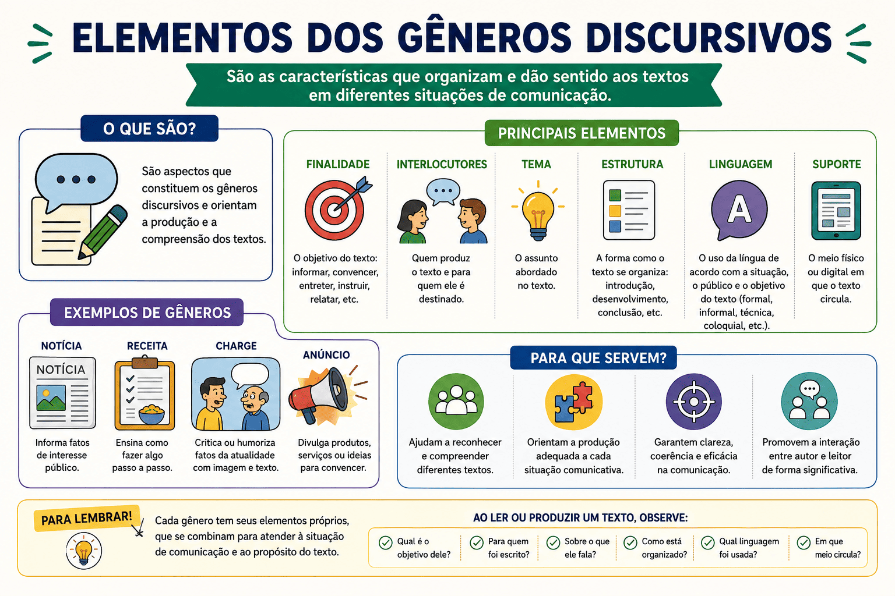

Elementos dos Gêneros Discursivos: estrutura, estilo, tema e teóricos
Sempre que nos comunicamos, seja enviando uma mensagem no WhatsApp, escrevendo uma redação no ENEM ou lendo uma bula de remédio, utilizamos formas relativamente estáveis de enunciados. A essas formas, a teoria linguística dá o nome de gêneros discursivos (ou gêneros textuais).
Compreender os elementos que compõem os gêneros discursivos é fundamental não apenas para a interpretação de textos, mas também para a produção escrita adequada a cada situação comunicativa. A competência de adequar o discurso ao gênero exigido é, inclusive, uma das habilidades mais avaliadas em vestibulares, concursos e exames nacionais.
Neste conteúdo, vamos aprofundar o estudo dos gêneros discursivos fundamentados na teoria de Mikhail Bakhtin, analisando seus três elementos essenciais: o conteúdo temático, o estilo e a construção composicional. Além disso, veremos as contribuições de teóricos brasileiros, como Luiz Antônio Marcuschi, seguindo rigorosamente os padrões de análise linguística.

O que são Gêneros Discursivos? A visão de Bakhtin
O conceito moderno de gêneros do discurso foi cunhado pelo filósofo e linguista russo Mikhail Bakhtin, em seu ensaio "Os gêneros do discurso" (escrito em 1952-53 e publicado postumamente). Para o autor, a linguagem não existe no vácuo; ela se materializa por meio de enunciados inseridos em esferas específicas da atividade humana (esfera jornalística, literária, científica, familiar, etc.).
"Todos os diversos campos da atividade humana estão ligados ao uso da linguagem. [...] O emprego da linguagem efetua-se em forma de enunciados (orais e escritos) concretos e únicos, proferidos pelos integrantes desse ou daquele campo da atividade humana. [...] Cada esfera de utilização da língua elabora seus tipos relativamente estáveis de enunciados, sendo isso que denominamos gêneros do discurso." (BAKHTIN, 2011, p. 261-262, grifos do autor).
Dessa forma, a carta pessoal, o e-mail, o editorial, o romance, a receita culinária e até mesmo uma conversa informal de bar são gêneros discursivos, pois possuem características próprias que nos permitem reconhecê-los e utilizá-los adequadamente.
Os 3 Elementos dos Gêneros Discursivos
Segundo Bakhtin (2011), esses tipos relativamente estáveis de enunciados são marcados por três elementos que se fundem de maneira indissociável no todo do enunciado. São eles:
| Elemento | O que representa? | Exemplo (Gênero: Receita Culinária) |
|---|---|---|
| 1. Conteúdo Temático | O "o quê" do texto. Refere-se aos temas, assuntos e limites de sentido que são aceitáveis e esperados dentro daquele gênero. | Alimentos, medidas, proporções, tempo de cozimento, utensílios de cozinha. |
| 2. Estilo | O "como se fala/escreve". Envolve a seleção de recursos lexicais (vocabulário), fraseológicos e gramaticais. Define a formalidade ou informalidade. | Uso de verbos no imperativo ("bata", "misture", "asse"), vocabulário objetivo, ausência de figuras de linguagem complexas. |
| 3. Construção Composicional | A "arquitetura" ou estrutura do texto. É a organização visual e estrutural que nos faz bater o olho e reconhecer o gênero imediatamente. | Divisão clara em duas partes: "Ingredientes" (em forma de lista) e "Modo de preparo" (em formato de passo a passo). |
Atenção: Esses três elementos são determinados pela esfera de comunicação. O estilo de uma sentença judicial (esfera jurídica) exige um vocabulário técnico e uma estrutura rígida, enquanto um vlog no YouTube (esfera do entretenimento) exige coloquialidade, gírias e edição dinâmica.
Gêneros Primários e Secundários
Bakhtin também propõe uma distinção fundamental quanto à complexidade e às condições de produção dos gêneros, dividindo-os em primários e secundários.
Gêneros Primários (Simples)
Formam-se em condições de comunicação discursiva imediata e espontânea. Estão ligados ao cotidiano.
Exemplos: diálogo informal, bilhete, saudação, mensagem rápida de celular.
Gêneros Secundários (Complexos)
Surgem em condições de comunicação cultural mais complexa, elaborada e organizada (principalmente escrita). Frequentemente "absorvem" os gêneros primários.
Exemplos: romance, tese de doutorado, artigo científico, inquérito policial, editorial.
A contribuição de Marcuschi: Tipos Textuais x Gêneros Textuais
No Brasil, o linguista Luiz Antônio Marcuschi foi um dos principais estudiosos a adaptar e expandir a teoria dos gêneros para o ensino de língua portuguesa. Ele resolveu uma confusão metodológica histórica nas escolas: a diferença entre tipo textual e gênero textual.
Para Marcuschi (2008, p. 154-155), os conceitos não devem ser confundidos:
- Tipos Textuais: São constructos teóricos definidos por suas características linguísticas (sintaxe, tempos verbais, relações lógicas). São finitos e limitados a meia dúzia: narração, argumentação, exposição, descrição, injunção.
- Gêneros Textuais (ou Discursivos): São os textos materializados encontrados no nosso cotidiano. São infinitos, dinâmicos e sociocomunicativos.
Exemplo prático de análise:
O Manual de Instruções é um gênero textual. Em sua construção composicional, ele se utiliza predominantemente do tipo textual injuntivo (que dá ordens/instruções), mas pode conter também o tipo textual descritivo (ao listar as peças do aparelho).
Suporte e Domínio Discursivo
Ainda na esteira dos autores contemporâneos, é impossível analisar um gênero discursivo sem considerar seu suporte. Marcuschi define o suporte como o locus físico ou virtual onde o texto se apresenta e circula (ex: o livro, o outdoor, a tela do celular, o jornal impresso). A mudança de suporte pode alterar a recepção e até mesmo a composição do gênero.
Quiz — Gêneros Discursivos (Nível Acadêmico e ENEM)
Teste seus conhecimentos
Questão 1 — Segundo Mikhail Bakhtin, os gêneros do discurso são tipos relativamente estáveis de enunciados. Quais são os três elementos indissociáveis que os compõem?
Questão 2 — Um professor pede aos alunos que escrevam uma "Receita Culinária", mas um aluno entrega um texto em formato de poema com rimas e métrica romântica sobre um bolo. Segundo a teoria bakhtiniana, qual elemento do gênero o aluno rompeu drasticamente?
Questão 3 — (Baseado em Concursos) Para Marcuschi, é incorreto afirmar que:
Questão 4 — Um romance histórico de 500 páginas e um bilhete deixado na geladeira são, respectivamente, exemplos de:
Questão 5 — O vocabulário específico, a escolha entre norma culta ou linguagem coloquial e a estrutura frasal correspondem a qual elemento dos gêneros discursivos?
Resumo sobre Elementos dos Gêneros Discursivos
- Definição (Bakhtin): São tipos relativamente estáveis de enunciados, moldados por diferentes esferas da atividade humana.
- Conteúdo Temático: O assunto permitido e abordado pelo gênero.
- Estilo: A escolha de palavras, registro formal/informal e recursos gramaticais.
- Construção Composicional: A arquitetura, estrutura visual e organização do texto.
- Marcuschi: Diferenciou Tipos Textuais (narração, descrição, etc. - categorias teóricas e finitas) de Gêneros Textuais (textos materializados no cotidiano - infinitos).
- Gêneros Primários: Simples e espontâneos (conversa oral, bilhete).
- Gêneros Secundários: Complexos e elaborados (romance, laudo, artigo científico).
Referências Bibliográficas
BAKHTIN, Mikhail. Os gêneros do discurso. In: BAKHTIN, M. Estética da Criação Verbal. Tradução de Paulo Bezerra. 6. ed. São Paulo: Martins Fontes, 2011. p. 261-306.
MARCUSCHI, Luiz Antônio. Produção textual, análise de gêneros e compreensão. São Paulo: Parábola Editorial, 2008.
Perguntas frequentes sobre Gêneros Discursivos
Qual a diferença entre gênero discursivo e tipo textual?
Tipo textual é a estrutura linguística profunda (narração, descrição, dissertação, injunção). São finitos (meia dúzia). Gênero discursivo é a forma como o texto se materializa na sociedade (carta, e-mail, conto, bula, redação do ENEM). São infinitos.
Por que a "Redação do ENEM" é considerada um gênero discursivo?
Porque ela possui conteúdo temático (problema de ordem social, científica ou cultural do Brasil), estilo (norma-padrão formal da língua, impessoalidade) e construção composicional específica (introdução, desenvolvimento argumentativo e proposta de intervenção).
Como o ENEM cobra gêneros discursivos na prova de Linguagens?
O ENEM avalia se o aluno reconhece a finalidade comunicativa do texto. As questões frequentemente cobram a identificação do público-alvo, do suporte (onde o texto foi publicado) ou da função social daquele texto a partir de sua estrutura composicional e seu estilo (uso de gírias, vocabulário técnico, etc.).
Conteúdos relacionados
- Diferença entre Texto Literário e Não Literário
- Coesão e Coerência: conceitos, diferenças e exemplos
- Tipos de Coesão Textual: coesão referencial, coesão sequencial e exemplos
- Variação Linguística: o que é e por que não existe "erro" de linguagem
- Interpretação de Texto: guia completo para provas e exames
Explore Outros Conteúdos
Continue seus estudos acessando outras seções do site Mestre Kira: